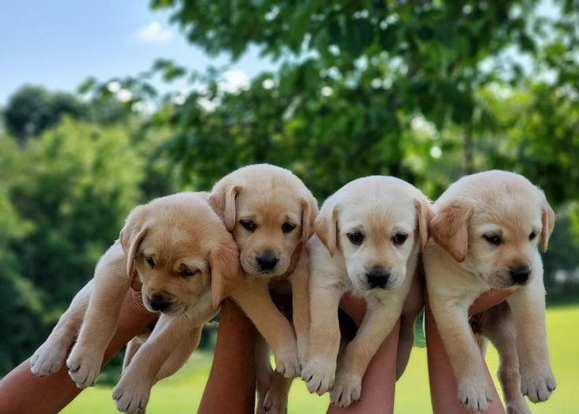

Preparar el espacio
Acondiciona un lugar tranquilo, limpio y seguro para que pueda descansar.
Adaptación inicial
Los primeros días son clave para que tu perro se sienta seguro y confiado en su nuevo hogar. Lo más importante es presentarle el espacio poco a poco, mantener un ambiente tranquilo y evitar demasiados cambios al mismo tiempo.

Acondiciona un lugar tranquilo, limpio y seguro para que pueda descansar.
Dale tiempo para explorar y acostumbrarse a su nuevo entorno sin presionarlo.
Sé paciente y crea un vínculo positivo con caricias suaves y refuerzo positivo.
Evita ruidos fuertes, visitas excesivas y situaciones que puedan estresarlo.